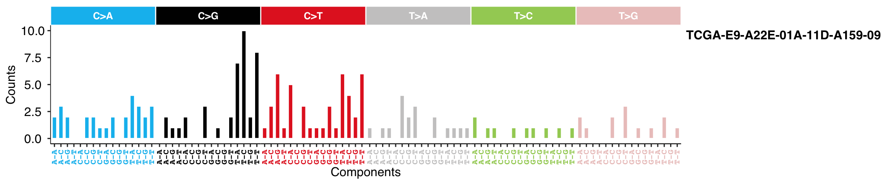
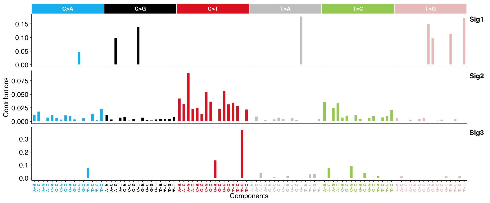

Chapter 12 SBS Signature Conversion
Converts signatures between two representations relative to different sets of mutational opportunities. Currently, only SBS signature is supported.
# Load SBS signature
load(system.file("extdata", "toy_mutational_signature.RData",
package = "sigminer", mustWork = TRUE
))
# Exome-relative to Genome-relative
sig_converted <- sig_convert(sig2,
from = "human-exome",
to = "human-genome"
)
sig_converted
#> Sig1 Sig2 Sig3
#> A[C>A]A 0.000000e+00 1.283652e-02 2.354578e-204
#> A[C>A]C 0.000000e+00 1.866572e-02 0.000000e+00
#> A[C>A]G 0.000000e+00 1.618700e-03 0.000000e+00
#> A[C>A]T 0.000000e+00 7.572233e-03 0.000000e+00
#> C[C>A]A 0.000000e+00 1.209076e-02 0.000000e+00
#> C[C>A]C 0.000000e+00 7.032249e-03 1.170400e-133
#> C[C>A]G 0.000000e+00 3.839313e-03 1.165310e-269
#> C[C>A]T 0.000000e+00 1.166974e-02 0.000000e+00
#> G[C>A]A 0.000000e+00 1.025669e-02 4.089543e-15
#> G[C>A]C 2.975389e-296 4.002311e-03 0.000000e+00
#> G[C>A]G 4.796114e-02 4.527374e-117 0.000000e+00
#> G[C>A]T 0.000000e+00 5.994876e-03 1.669814e-131
#> T[C>A]A 0.000000e+00 3.324941e-96 7.673114e-02
#> T[C>A]C 0.000000e+00 1.467589e-02 9.720402e-229
#> T[C>A]G 0.000000e+00 3.199454e-03 0.000000e+00
#> T[C>A]T 0.000000e+00 2.338506e-02 0.000000e+00
#> A[C>G]A 0.000000e+00 1.198076e-02 1.210238e-153
#> A[C>G]C 0.000000e+00 3.999796e-03 0.000000e+00
#> A[C>G]G 9.976549e-02 7.184837e-58 0.000000e+00
#> A[C>G]T 0.000000e+00 7.572233e-03 9.731662e-108
#> C[C>G]A 0.000000e+00 8.732217e-03 1.472610e-34
#> C[C>G]C 0.000000e+00 1.875266e-03 0.000000e+00
#> C[C>G]G 0.000000e+00 4.429976e-03 1.144811e-70
#> C[C>G]T 1.398527e-01 1.003533e-19 0.000000e+00
#> G[C>G]A 1.227107e-293 7.521572e-03 2.969058e-285
#> G[C>G]C 0.000000e+00 3.001734e-03 2.665595e-168
#> G[C>G]G 0.000000e+00 2.178881e-03 0.000000e+00
#> G[C>G]T 0.000000e+00 3.996584e-03 0.000000e+00
#> T[C>G]A 0.000000e+00 4.493267e-03 2.338585e-311
#> T[C>G]C 0.000000e+00 5.336688e-03 1.100445e-248
#> T[C>G]G 0.000000e+00 5.027714e-03 2.505791e-283
#> T[C>G]T 0.000000e+00 8.094828e-03 4.211703e-12
#> A[C>T]A 0.000000e+00 4.278842e-02 6.186711e-285
#> A[C>T]C 0.000000e+00 3.266500e-02 4.009287e-180
#> A[C>T]G 0.000000e+00 8.943317e-02 1.936180e-271
#> A[C>T]T 0.000000e+00 2.366323e-02 0.000000e+00
#> C[C>T]A 0.000000e+00 2.552494e-02 0.000000e+00
#> C[C>T]C 0.000000e+00 1.406450e-02 1.334078e-226
#> C[C>T]G 0.000000e+00 5.463637e-02 9.737288e-158
#> C[C>T]T 0.000000e+00 3.695418e-02 4.246509e-172
#> G[C>T]A 0.000000e+00 1.550033e-134 1.379990e-01
#> G[C>T]C 0.000000e+00 2.401387e-02 9.655208e-197
#> G[C>T]G 0.000000e+00 5.665090e-02 1.322415e-193
#> G[C>T]T 0.000000e+00 3.197267e-02 1.483309e-124
#> T[C>T]A 0.000000e+00 3.504749e-02 1.602583e-125
#> T[C>T]C 0.000000e+00 2.868470e-02 2.192251e-133
#> T[C>T]G 0.000000e+00 5.607061e-45 3.725237e-01
#> T[C>T]T 0.000000e+00 2.248563e-02 5.991874e-150
#> A[T>A]A 0.000000e+00 8.169022e-163 4.909543e-207
#> A[T>A]C 0.000000e+00 9.451235e-03 9.169290e-161
#> A[T>A]G 0.000000e+00 1.860257e-209 3.781700e-02
#> A[T>A]T 0.000000e+00 3.646724e-03 0.000000e+00
#> C[T>A]A 0.000000e+00 9.626354e-63 1.877035e-152
#> C[T>A]C 0.000000e+00 4.098575e-03 8.954807e-03
#> C[T>A]G 0.000000e+00 7.584736e-03 1.779246e-46
#> C[T>A]T 0.000000e+00 4.886651e-03 0.000000e+00
#> G[T>A]A 0.000000e+00 1.923466e-257 1.645056e-02
#> G[T>A]C 0.000000e+00 5.990275e-03 2.816093e-138
#> G[T>A]G 0.000000e+00 2.491146e-03 5.966918e-137
#> G[T>A]T 1.780073e-01 1.470587e-107 0.000000e+00
#> T[T>A]A 0.000000e+00 0.000000e+00 1.576605e-78
#> T[T>A]C 0.000000e+00 3.652510e-193 3.025830e-02
#> T[T>A]G 0.000000e+00 0.000000e+00 3.102984e-02
#> T[T>A]T 0.000000e+00 5.570191e-03 2.661350e-186
#> A[T>C]A 0.000000e+00 3.673499e-02 2.037390e-236
#> A[T>C]C 0.000000e+00 4.875997e-80 8.069896e-02
#> A[T>C]G 0.000000e+00 2.533400e-02 4.653276e-300
#> A[T>C]T 0.000000e+00 3.403610e-02 1.137147e-235
#> C[T>C]A 0.000000e+00 7.619558e-03 1.273356e-94
#> C[T>C]C 0.000000e+00 1.116095e-02 1.501723e-122
#> C[T>C]G 0.000000e+00 9.506418e-50 9.321794e-02
#> C[T>C]T 0.000000e+00 1.172796e-02 1.679251e-87
#> G[T>C]A 0.000000e+00 4.585040e-03 5.536247e-03
#> G[T>C]C 0.000000e+00 5.073564e-255 4.133148e-02
#> G[T>C]G 0.000000e+00 6.850650e-03 0.000000e+00
#> G[T>C]T 3.036787e-50 1.058999e-02 7.624782e-161
#> T[T>C]A 0.000000e+00 1.774320e-183 1.917769e-02
#> T[T>C]C 3.471970e-224 7.796288e-03 0.000000e+00
#> T[T>C]G 0.000000e+00 9.993850e-03 0.000000e+00
#> T[T>C]T 0.000000e+00 2.116673e-02 4.729625e-249
#> A[T>G]A 0.000000e+00 6.559820e-03 0.000000e+00
#> A[T>G]C 0.000000e+00 8.576821e-159 1.467254e-02
#> A[T>G]G 0.000000e+00 1.544237e-03 3.140069e-03
#> A[T>G]T 0.000000e+00 3.646724e-03 0.000000e+00
#> C[T>G]A 0.000000e+00 1.088508e-03 0.000000e+00
#> C[T>G]C 0.000000e+00 5.252213e-03 5.352907e-111
#> C[T>G]G 0.000000e+00 6.320613e-03 0.000000e+00
#> C[T>G]T 1.505897e-01 2.544085e-94 2.345935e-218
#> G[T>G]A 9.796461e-02 2.199487e-93 1.446688e-154
#> G[T>G]C 0.000000e+00 1.996758e-03 0.000000e+00
#> G[T>G]G 0.000000e+00 3.736718e-03 0.000000e+00
#> G[T>G]T 0.000000e+00 3.701349e-72 1.494581e-02
#> T[T>G]A 1.142049e-01 5.198170e-158 0.000000e+00
#> T[T>G]C 0.000000e+00 4.872680e-03 0.000000e+00
#> T[T>G]G 0.000000e+00 1.798724e-19 1.551492e-02
#> T[T>G]T 1.716541e-01 1.775134e-54 0.000000e+00
show_sig_profile(sig2, style = "cosmic")
